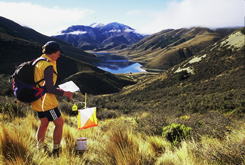

Rogaining - the essence of the Map
Grant Hunter
First published in Wilderness magazine, September 2004, and reproduced with permission
Forty five teams fanned out from the starting tent. Some headed eastward, over Rabbit Hill on the edge of the Benmore Range, some westward towards Red Hill at the southern tip of the Craigieburns. Others hugged lower ground past Lake Lyndon and into the tributaries of the upper Acheron. Multisporters, orienteers and trampers were joined by the quest to navigate around 35 controls scattered over 30 square kilometres of mountain slopes and valley floors in the Korowai-Torlesse Tussockland Park near Porters Pass.

For some it was a race, while others set out for a brisk hike with an added mental challenge. All were transfixed by the map, for reading the map is the secret of rogaining success. Some teams might have held a compass to make sure the map was always orientated to the landscape, but most have just eyeballed the map and rotated it to make sure features on the map lined up with the real thing in the landscape. This was the Heights of Korowai ‘Office Hours’ rogaine.
The annual ‘Heights of Winter’ rogaine I’d grown up with over the last five years is a 12-hour event that leads teams into mid-winter darkness, which can be intimidating for some newcomers and less competitive types. Hard core rogainers swear by an even more demanding, classic 24 hour event within which the sport of rogaining had its roots. We saw Korowai as an opportunity to offer a more gentle event extending over seven hours of daylight, just like a good day-hike. I hoped this one would appeal to a wider range of outdoors people, people who might be more interested in tweaking their map reading and navigation skills rather than in competing.
Most of us going tramping move through the landscape fairly superficially, following the track, or the stream, or the leading spur, maybe every now and again taking care to look out for a particular turnoff or tributary stream. We stop from time to time to be impressed by a peak or even an overall landscape, maybe then plucking out the map to grace what lies before us with a name.
Rogaining focuses the mind on navigating around a series of features in a complex landscape, often with just a dot on the map and a one-line description for guidance, and frequently remote from the track.
At a more theoretical level, rogaining deepens one’s sense of geography, a deepening that brings an awareness of subtle folds and features in the landscape, and leads to a better understanding of the relationships between them, and how they collectively contribute to landscape.
Back at home with these skills you can re-construct landscapes any time you like, in miniature, on a now much more meaningful topographical map. For times when you simply can’t get out, armchair travel with a map is a rewarding distraction, more so for some of us, than web surfing or Playstation.
Emphasis on navigation enhances the outdoor experience for rogainers and their appreciation of landscape. Out at Korowai we steered people onto the most striking geological fault line trace that many (including me) had ever noticed before, and onto vibrant red tussock wetland growing on an otherwise dry and superficially desolate mountainside.
They sidled stable mountain streams, and looked down on blue, glacial-formed lakes. A comment in the results report summed it up: A great setting on a gem of a day - fine and clear, a touch of snow from a fall earlier in the week on the background peaks, Lakes Lyndon and Coleridge as blue as blue, and a lightly cooling breeze. That’s about as good as it gets.
If the essence of rogaining is reading the map, the practice of rogaining involves a little more. At Korowai, each team of between two and five people was given a standard, 1:50,000 scale topographical map, with check points over-printed on it, an hour before the start. (Take a look at the map).
Their first challenge was strictly a mental one, to plan a route that would lead them to visit as many check points as they thought they could in the seven hours.
Smart teams can get an edge on just-fit ones through careful planning. You’ll see some teams winding cotton around pins jammed into check points on the map to calculate distances run on various possible route options, and counting the brown contour lines their cotton intersects to judge the length of climbs. They are looking for the highest possible points tally for the shortest distance and climb.
On a well-planned course no teams will have time to visit all check points, which means that even elite teams must make choices about which to leave out. All teams have access to exactly the same course but each choose a route that they are capable of following. To toughen-up the navigational challenge, each rogaine is in new terrain. Although Korowai is a public park, few teams would have visited this particular secluded corner before.
Once on the move it was a matter of teams following the map, learning more about the association between map and ground, monitoring their progress, dealing with surprises, and adjusting their game plan. It’s a matter of always knowing where you are, thumbing the map and mentally ticking-off features you pass, and back-tracking promptly if you lose it.
At Korowai, teams used their seven hours well, but knowing if they returned to base even one minute after the 7-hour closure, they would incur a points penalty. Though they were welcome to finish at base at any time after the start, with 15 minutes to go only a handful of teams had done so.
By selecting their own course - there is no ‘best way’ to go - and by travelling at different speeds, teams soon thin out and most would be alone for much of the day. But there’s plenty of social contact too. It’s an activity for small teams, and members must stay together, the whole team for example returning to base to drop off a member who decides to withdraw from the event. The tradition is for an after-event meal when teams can compare experiences.
Placings at Korowai showed the universal appeal of rogaining, and the breadth of the interest at the competitive level. First place was an open men’s team with a national elite grade orienteer, second a father and son team (the son aged 14) also skilled orienteers, 4th a mixed gender team, 6th a mixed team all older than 60, and 8th a women’s team.
My own pleasure comes less from participating and more from organising events. I find quiet satisfaction when walking around new landscapes, always at my own pace, plotting check-point locations to challenge the teams. Unlike them, I go out on many occasions before the event, not just once… but that’s my secret. I draw inspiration on the day from watching teams returning to base after a long day, with a smile.
Working with landowners on access to their land has been another rogaining privilege for me. In Canterbury at least, the fine network of gullies and ridges, the mosaic of grassland, scrub and forest and the relatively short but still steep slopes in farmed hill country offer a greater navigational challenge and a more moderated physical challenge than the larger-scale, more mountainous areas over much of the conservation estate. Working with nearly a hundred farmers and forest managers has changed my view of rural communities, for the better by far.
You’ll find no deep meaning or helpful description in that odd name ‘rogaine’. It’s a corruption of Rod Gail and Neil Phillips, enterprising Aussies who developed rogaining as a derivative of 24-hour endurance walks and orienteering. Since the mid 1970s their sport has migrated to New Zealand, Canada, parts of the US, and some eastern Europe countries including the Czech Republic. New Zealand hosted the 4th World Championships in 2000, held at Leader River, North Canterbury.
Administratively, rogaining is rather loosely structured in New Zealand, which adds nicely to its pioneering feel. Despite this flexible structure, organisers are very aware of safety and environmental issues and work to procedures adopted for other forms of multisport. It’s my contention that rogaining can be, and often is, more environmentally friendly and illuminating that almost any other outdoor activity.
Events are where you find them, organised by individuals and orienteering clubs, often under the umbrella of the New Zealand Rogaining Association. In Canterbury we have Heights of Winter, ad-hoc events like Korowai, and a short twilight series on the Port Hills. Otago is strong with Bruce McLeod’s EPIC events (http://homepages.ihug.co.nz/~Sbmcleod/), there are hot spots in Marlborough, Wellington and elsewhere. A 24 hour NZ championship event is held somewhere most years, this year in Waimarama, South Auckland, in March.
The prognosis for rogaining seems strong as more and more people become attracted to the array of outdoor adventures accessible to New Zealanders. Because roads are avoided as much as possible, rogaining offers a distinct safety-planning advantage in our increasingly risk-shy political and social world. Though growth in the number of tramper-teams at Korowai was modest, I’ll keep working away at widening the base of participation to include more of those who might gain from discovering the essence of the map.
To see what’s on in rogaining around New Zealand consult this website, www.rogaine.org.nz, or www.mapsport.co.nz.
Grant Hunter.